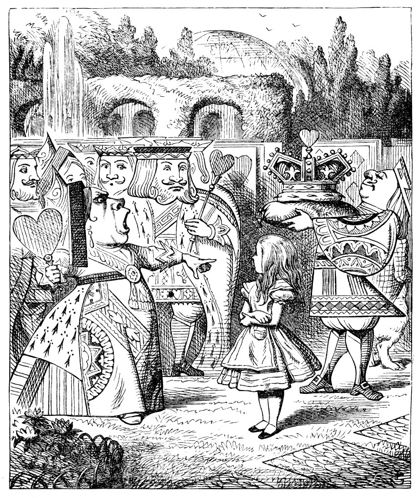
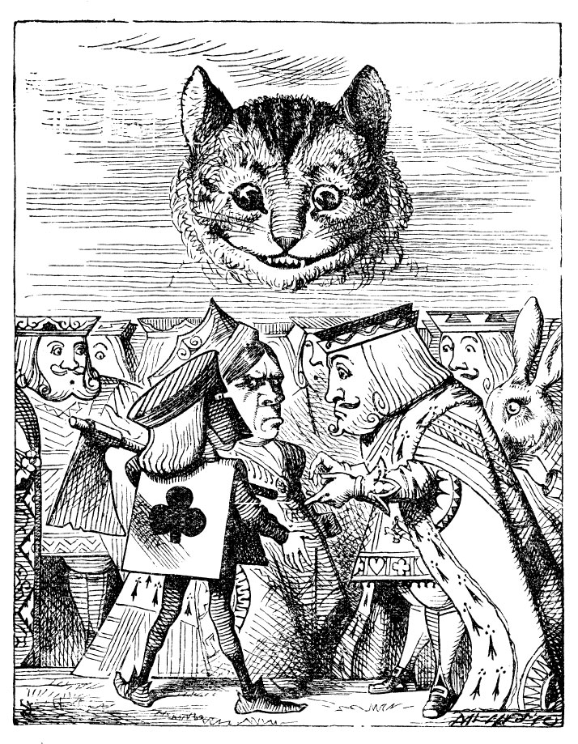

Bahçe girişinin yakınlarında kocaman bir gül ağacı duruyordu; üstündeki güller beyazdı; ama bunları hummalı hummalı kırmızıya boyayan üç bahçıvan vardı ağacın altında. Amma da tuhaf diye düşündü Alice; onları daha yakından izlemek üzere yanlarına yaklaştı; iyice onlara doğru sokulmuştu ki, içlerinden birinin, “Dikkat etsene, Beşli! Üzerime boya sıçratıp durma!” dediğini duydu.
“İsteyerek olmadı,” dedi Beşli, somurtarak. ”Yedili dirseğimi itti.”
Bunun üzerine Yedili dönüp, “Ha işte böyle Beşli! Suçu hep başkalarına at!” dedi.
“Sussan senin için pek hayırlı olacak).” dedi Beşli, ”Daha dün Kraliçe'nin
onun başı kesilse yeridir dediğini kendi kulaklarımla duydum!”
“Niçin?” diye sordu, ilk konuşan.
“Bu seni hiç ilgilendirmez İkili,” dedi Yedili.
“Pekala da ilgilendirir!” dedi Beşli.
“Ona da anlatacağım... Aşçıya soğan yerine lale soğanı götürmüş de ondan.”
Yedili fırçasını yere atıp, “Bütün bu haksızlıklar...” diye tam söze başlamıştı ki, birden gözü onlara bakıp duran Alice’e takıldı ve dönüp kendine çekidüzen verdi: ardından ötekiler de dönüp ona baktılar ve hepsi birden yerlere kapanarak ona selam verdiler.
Alice, çekine çekine, “Lütfen söyler misiniz, neden bu gülleri boyuyorsunuz?” diye sordu.
Beşli ve Yedili hiçbir şey söylemeyip, dönüp İkili’ye baktılar. İkili, kısık sesle başladı anlatmaya, “Şöyle ki, küçük hanım, aslında burada kırmızı bir gül ağacı olmalıydı, biz yanlışlıkla beyaz dikmişiz. Olur ya, Kupa Kraliçesi bunu fark ederse hepimizin kafası gider. İşte bu yüzden, küçük hanım, kendisi gelmeden önce, elimizden geldiğince...” O sırada endişe içinde etrafı kolaçan eden Beşli, “Kraliçe! Kraliçe!” diye bağırdı; bir anda üç bahçıvan da yüzükoyun yere kapandılar. Bir sürü ayak sesi geliyordu; Alice, Kraliçe’yi görmeye can atarak dönüp baktı.
Önce ellerinde sinek başlı mızraklarıyla on tane asker geldi: Tıpkı üç bahçıvan gibi yamyassı ve dikdörtgen biçimli gövdelerinin köşelerinden elleri ve ayakları çıkıyordu; onların arkasında on saray mensubu vardı, baştan ayağa karo şekilli elmaslarla bezenmişlerdi ve askerler gibi ikişer ikişer yürüyorlardı. Onları kraliyet ailesi çocukları izliyordu: Toplam on kişiydiler, bu minik yavrular çifter çifter el ele tutuşmuş neşe içinde zıp zıp zıplayıp duruyorlardı; hepsi de kupa şekilli kalplerle süslenmişlerdi. Arkalarından gelen konukların çoğunluğunu da kral ve kraliçeler oluşturuyordu, Alice bunların arasından Beyaz Tavşan’ı hemen tanıdı: Telaşla ve gergin bir şekilde konuşup duruyor, kendisine her söylenene gülümseyerek karşılık veriyordu, Alice’i tanımadan yanından geçip gitti. Bunları, bordo renkli kadife bir minder üzerinde duran Kral tacını taşıyan Kupa Valesi izliyordu; bu yüce alayın en sonunda da KUPA KRALI ve KUPA KRALİÇESİ geliyordu.
Alice, tıpkı diğer üç bahçıvan gibi yüzükoyun yere kapansın mı kapanmasın mı tam kesti rem iyordu; ama törenlerde böyle bir kuralın olup olmadığını da anımsamıyordu; “Hem üstelik eğer tüm insanlar yüzükoyun yere yatıp alayı göremeyeceklerse, o törenin ne anlamı olur,” diye düşündü. Böylece, olduğu yerde öylece kalıp bekledi.
Alay, tam Alice’in karşısına geldiği anda, hepsi durup ona baktılar. Kraliçe, sert sert, “Bu da kim?” diye sordu. Sorunun muhatabı Kupa Valesi cevaben saygıyla eğilip gülümsedi sadece.
“Aptal!” dedi Kraliçe başını sabırsızlıkla sallayarak; sonra da Alice’e dönüp devam etti, “Senin adın ne çocuk?”
“Alice, saygıdeğer Majesteleri,” dedi Alice kibarca, ama sonra dönüp kendi kendine, “Bunlar topu topu bir deste iskambil kâğıdı. Onlardan korkmama hiç gerek yok ki!” dedi.
“Ya şunlar kim?” dedi Kraliçe, gül ağacının etrafında uzanmış üç bahçıvanı işaret ederek; öyle ya yüzükoyun yattıklarından ve sırtlarındaki şekiller destedeki diğer kâğıtlarla aynı olduğundan, Kraliçe bunların bahçıvan mı, asker mi, asilzadelerden mi, yoksa kendi çocuklarından üçü mü olduğunu tam kestiremiyordu.
“Nerden bileyim,” dedi Alice, bir yandan da cesaretine kendisi de şaşırarak. “Bu beni hiç ilgilendirmez.”
Kraliçe, öfkeden kıpkırmızı oldu, tıpkı kudurmuş bir hayvan gibi ona bakıp, “Uçurun kellesini! Uçurun...” diye avazı çıktığınca bağırdı.
Alice de kararlı bir ses tonuyla, “Saçma!” diye haykırınca, Kraliçe ses etmedi.
Kral, elini karısının koluna götürüp ürkekçe, “Aman, hayatım, o daha bir çocuk,” dedi.

Kraliçe, öfkeyle kocasından uzaklaşıp, Kupa Valesi'ne “Çevir şunları!” dedi.
Oğlan, tek ayağıyla söyleneni dikkatlice yerine getirdi.
“Kalkın ayağa!” dedi Kraliçe yeri göğü çınlatarak; üç bahçıvan da anında zıplayıp kalktılar; Kral’ı, Kraliçe'yi, kraliyet çocuklarını, kim var kim yok herkesi yere eğilerek selamlamaya başladılar.
“Kesin şunu!” diye bağırdı Kraliçe, “Başımı döndürüyorsunuz.” Sonra da dönüp gül ağacına bakarak devam etti, “Burada ne yapıyordunuz?”
“Majesteleri müsade buyururlarsa,” diye cevap verdi İkili, konuşurken bir yandan da tek dizi üzerine çöküp ezilip büzülerek, “Şey... şey yapmaya çalışıyorduk...”
Kraliçe bu arada gülleri inceleyerek, “Anladım,” dedi. “Uçurun kellelerini!” Alay ilerleyedursun, üç asker kendilerini korusun diye Alice’e koşan zavallı bahçıvanları idam etmek üzere arkada kalmıştı.
“Korkmayın, kafanız uçurulmayacak!” dedi Alice ve onları yakınlarda duran genişçe bir çiçek saksısının içine koydu. Üç asker, bir iki dakika onları arayıp durarak ortalarda dolaştılar, sonra da sessizce diğerlerinin ardından yürümeye koyuldular.
“Kelleleri uçuruldu mu?” diye bağırdı Kraliçe.
“Majestelerinin buyurdukları gibi kelleleri gitti,” diye karşılık verdi askerler bağırarak.
“Güzel,” diye gürledi Kraliçe. “Kroket oynamayı bilir misin?”
Askerler susup öylece Alice’e baktılar, bu soru kesinlikle ona yönelikti.
“Evet,” diye haykırdı Alice.
“O halde, hadi!” diye kükredi Kraliçe. Alice de, acaba şimdi ne olacak diye merak içinde alaya katıldı.
“Bugün... bugün çok güzel bir gün,” dedi yanı başındaki ürkek bir ses. Alice, kaygı içinde gizli gizli kendisini süzen Beyaz Tavşan ile yan yana yürüyordu.
“Çok,” dedi Alice. “... Düşes nerede?”
“Şişti Şişt!” dedi Tavşan, kısık ve telaşlı bir ses tonuyla. Konuşurken bir yandan da endişeyle dönüp arkasına baktı, sonra da ayakları üzerinde yükselerek Alice’in kulağına, “İdam cezasına çarptırıldı,” diye fısıldadı.
“Niçin?” dedi Alice.
“Ne yazık mı, dedin?” diye sordu Tavşan.
“Hayır, öyle demedim,” dedi Alice. “Ne yazık denecek bir şey olduğunu da sanmıyorum. Ne için, dedim.”
“Kraliçe’nin kulaktozuna vurdu...” diye anlatmaya başlayınca, Alice bir kahkaha kopardı. “Aman, şişt!” diye fısıldadı Tavşan, korka korka. “Kraliçe, şimdi seni duyacak! Ha, işte biraz geç kaldığını söylüyordum, Kraliçe de dedi ki...”
“Yerlerinize geçin!” diye yeri göğü inletti Kraliçe; herkes birbirine çarpa çarpa oraya buraya koşuşturmaya başladı, neyse ki bir iki dakika içinde hepsi yerlerini aldı ve oyun başladı. Alice, ömründe hiç bu kadar tuhaf bir kroket sahası görmemişti: Saha, tümüyle tümsek ve çukurlardan ibaretti; toplar canlı kirpi, tokmaklar da canlı flamingolardı, köprü kuran askerler de kaleleri oluşturmakla yükümlüydü.
Alice’in ilk başta karşılaştığı en önemli güçlük, flamingosunu kullanmak oldu; flamingonun gövdesini kolunun altına güzelce sıkıştırdı, hayvanın bacakları da serbestçe sallanır haldeydi, ama tam boynunu düzgünce doğrultup kafasıyla kirpiye vuracakken, her seferinde flamingo boynunu döndürüp, Alice’in yüzüne öyle şaşkın bir ifadeyle bakıyordu ki, Alice elinde olmadan kahkahaya boğuluyordu; flamingonun kafasını aşağıya sarkıtıp yeniden oyuna başlayacakken de, bu sefer kirpinin tortop olmayıp sürünerek uzaklaştığını görmek sinir bozucuydu; bütün bunlar yetmezmiş gibi, ne zaman tam kirpisini yuvarlama fırsatı bulsa, önüne ya bir tümsek ya da bir çukur engeli çıkıyordu; kale görevindeki askerler de boyuna doğrulup sahanın başka bir tarafına doğru yürüyüp gittiklerinden, Alice bunun gerçekten zor bir oyun olduğu sonucuna vardı.
Oyuncular, sıralarını beklemeyip sürekli ağız dalaşı yapıyorlar, kirpi kavgası ederek birbirlerine giriyorlardı; derken Kraliçe ateş püskürüp tepinmeye başladı; nerdeyse her dakikada bir, “Uçurun şunun kellesini! Uçurun bunun kellesini!” diye bağırıp durdu.
Alice huzursuzlanmaya başlamıştı; henüz Kraliçe’yle herhangi bir anlaşmazlığa düşmemişti kuşkusuz, ama bunun her an olabileceğini biliyordu. “İşte o zaman ne olur benim halim?” diye düşündü, “Burada insanların kafasını kesmeye ne kadarda meraklılar. Nasıl olmuş da birileri sağ kalmış, hayret doğrusu!”
Bir yol bulup kimseye çaktırmadan nasıl sıvışırım diye merak edip dururken, havada tuhaf bir görüntü beliriverdi; önce pek bir şaşırdı, ama bir iki dakika sonra bu sırıtışı hemen tanıyıverdi ve kendi kendine, “Bu Cheshire Kedisi,” dedi. “İşte sonunda iki çift laf edecek birini buldum.”
Kedi, konuşacak kadar ağzı ortaya çıkınca, “Ne var, ne yok?” dedi.
Alice, Kedi’nin gözleri ortaya çıkıncaya değin bekleyip sonra da başını salladı. “Kulaklarından hiç değilse bir tanesi belirmeden, bununla konuşmak yersiz,” diye düşündü. Derken bütün kafa gözüktü, bunun üzerine Alice flamingosunu yere bırakıp, kendisini dinleyecek birini bulmanın verdiği keyifle oyunu anlatmaya koyuldu. Kedi, görünen kısmının yeterli olduğunu düşünmüş olmalı ki, vücudunun geri kalanı belirmedi.
“Galiba kuralları hiç takmıyorlar,” diye, Alice, yakına yakına başladı anlatmaya. “Öyle bir kavga gürültü koparıyorlar ki, insan kendi söylediğini bile duymuyor... Oyunun pek öyle özel kuralları varmış gibi de gelmiyor bana, zaten olsa da kimsenin uyduğu yok... Hele oyunu canlı şeylerle oynamaları yok mu ya, insanı çileden çıkarıyor: örneğin şimdi topumu geçirmem gereken kale, bakın kalkmış sahanın diğer tarafına gitmiş... ayrıca şimdi kirpimi Kraliçe’nin kirpisine vurdurmam gerekiyordu, ama benim kirpinin geldiğini görünce kaçtı!”
“Kraliçe’yi sevdin mi?” diye sordu Kedi yavaşça.
“Hiç sevmedim,” dedi Alice: “O kadar çok...” Tam o anda Kraliçe’nin hemen arkasında kendisini dinlediğini fark edince lafı çevirdi: “... belli ki kazanacağı, oyunu bitirmeye bile değmez.”
Kraliçe, gülümseyip geçip gitti.
Kral, Alice’e doğru yaklaşıp, hayretle Kedi’nin kafasına bakarak, “Kiminle konuşuyorsun?” diye sordu.
“Bir arkadaşım... Cheshire Kedisi,” dedi Alice. “İzin verin de, onu size takdim edeyim.”
“Suratı hiç hoşuma gitmedi,” dedi Kral: “Neyse, elimi öpmesine müsaade ediyorum.”
“Doğrusu pek tercih etmem,” dedi Kedi.
“Küstahlaşma,” dedi Kral, “bana da öyle bakıp durma!” Kral bunları Alice’in arkasına geçip söylemişti.
“Kediler krallara bakabilir,” dedi Alice. “Bu atasözünü bir kitapta okumuştum, ama hangisindeydi şimdi unuttum.”
“Pekala, bu Kedi derhal ortadan kaldırılmalı,” dedi Kral, kararlı bir şekilde ve o anda oradan geçmekte olan Kraliçe’yi çağırıp, “Sevgili Karıcığım, şu Kedi’yi ortadan kaldırtmanı istiyorum,” dedi.
Kraliçe, büyük küçük bütün sorunları hallederken başvurduğu biricik yöntemini kullanıp, “Uçurun kellesini,” dedi, etrafına bile bakmadan.
“Celladı ben getiririm,” dedi Kral büyük bir hevesle ve anında fırlayıp gitti.
Alice, Kraliçe’nin uzaklarda kopan öfke çığlığını duyar duymaz, gidip oyunun ne durumda olduğunu görmesi gerektiğini düşündü. Sıralarını kaçırdıkları için üç oyuncunun idam cezasına çarptırıldıklarını zaten duymuştu; gidişattan pek hoşnut değildi, oyun öyle bir karman çorman hal almıştı ki, sıranın kendisine gelip gelmediğini bile bilmiyordu. Böylece, gidip kirpisini aramaya koyuldu.
Kirpisi bir başka kirpiyle kavgaya tutuşmuştu; bu da Alice için, birini diğerine vurdurarak top sürmek için bulunmaz bir fırsat doğurmuştu; tek sorunu flamingosunun bahçenin öbür tarafına gitmiş olmasıydı, Alice’in görebildiği kadarıyla orada ağaçlardan birine uçmak için çaresizce çabalayıp duruyordu.

Flamingoyu yakalayıp geri getirdiğinde de, kavga çoktan bitmiş, iki kirpi ortadan kaybolmuştu: “Neyse, sorun değil,” diye düşündü Alice, “zaten sahanın bu tarafındaki tüm kale askerler de çekip gitmiş.” Bunun üzerine, kaçmasın diye flamingosunu koltuğunun altına sıkıştırıp, arkadaşıyla biraz daha sohbet etmek üzere geri geldi.
Cheshire Kedisi’nin yanına geldiği anda, oldukça büyük bir kalabalığın Kedi’nin etrafında toplandığını görüp şaşırdı: Cellat, Kral ve Kraliçe hep bir ağızdan konuşarak tartışıyorlardı, geri kalan herkes ise sus pus olmuştu, rahatsız görünüyorlardı.
Alice’i gördükleri anda, her üçü de sorunu halletmesi için ona başvurdular; her biri kendi savını bir bir anlattı; ne var ki hep birden konuştuklarından Alice tam olarak ne dediklerini zar zor anladı.
Cellâdın savına göre, kafadan ayrılacak bir gövde olmadıkça, bir kafa uçurulamazdı; ömründe böyle bir şey yapmak zorunda kalmamıştı hiç, bu yaştan sonra da yapacak değildi.
Kral’ın savına göre, kafası olan her şeyin kafası kesilebilirdi, saçmalamasına gerek yoktu.
Kraliçe’nin savına göre, hemen o dakikada bir şey yapılmazsa, oradaki herkesi idam ettirecekti. (İşte oradaki herkesi ciddi ve endişeli kılan şey de bu açıklamaydı.)
“Kedi Düşes’in olduğuna göre, ona sorsanız daha iyi edersiniz,” demekten başka bir şey gelmedi Alice’in aklına.
“O hapishanede,” dedi Kraliçe cellâda: “Git, onu getir.” Cellât ok gibi fırlayıp gitti.
Kedi'nin kafası, cellâdın gidişiyle beraber yavaş yavaş kayboldu; Düşes’le geri döndüğü anda ise tümüyle yok olmuştu; Kral ve cellât onu aramak üzere delirmişçesine koşadursunlar, diğerleri oyuna çoktan geri dönmüşlerdi bile.